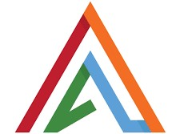

4 Axis Solutions
19th December 2022 - 16th June 2023
During My internship, I had the chance to work with the Angular framework, which is widely used for
web development, and I also gained expertise in Swift, a programming language specifically designed
for iOS mobile app development. This exposure to both web and mobile development will undoubtedly be
beneficial for my future career in software engineering.
Additionally, I acquired knowledge in Firebase, a powerful cloud-based platform for building and
managing apps, and version control tools, which are essential for collaborative software development.
Understanding version control is crucial for maintaining code history and facilitating teamwork on
software projects.
Overall, My internship at 4Axis Solutions has equipped me with a diverse skill set and hands-on
experience in cutting-edge technologies, which will undoubtedly serve as a strong foundation for my
future in the software engineering field. Well done, and best of luck as i continue to grow and excel
in my career!